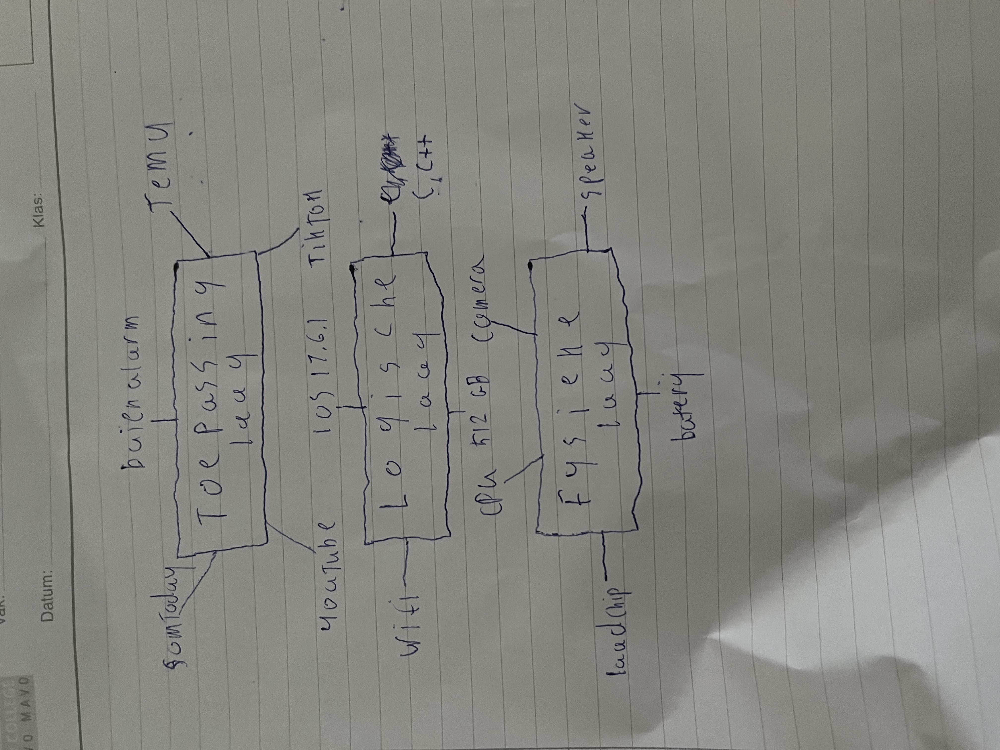

Randapparatuur zijn alle externe apparaten die op een computer kunnen worden aangesloten om extra functionaliteit toe te voegen. Deze apparaten zorgen ervoor dat een computer veelzijdiger wordt en beter kan communiceren met de gebruiker of andere systemen. Randapparatuur kan worden verdeeld in verschillende categorieën, afhankelijk van hun functie: invoerapparaten, uitvoerapparaten en opslagapparaten.
Invoerapparaten zijn apparaten waarmee gegevens naar de computer worden gestuurd. Denk aan het toetsenbord, waarmee je tekst kunt invoeren, en de muis, waarmee je kunt klikken en navigeren. Andere voorbeelden van invoerapparaten zijn de scanner, waarmee je papieren documenten digitaal maakt, en de microfoon, die geluid opneemt voor verwerking in de computer.
Uitvoerapparaten zijn apparaten waarmee de computer informatie aan de gebruiker kan tonen of afspelen. Voorbeelden hiervan zijn het beeldscherm, waarop tekst, afbeeldingen en video worden weergegeven, en de printer, die digitale documenten op papier kan afdrukken. Ook luidsprekers vallen onder uitvoerapparaten, omdat ze geluid dat de computer afspeelt hoorbaar maken voor de gebruiker.
Opslagapparaten vormen een andere belangrijke categorie randapparatuur. Dit zijn apparaten waarmee gegevens kunnen worden opgeslagen of overgedragen. Externe harde schijven, USB-sticks en geheugenkaarten zijn veelgebruikte voorbeelden. Ze maken het mogelijk om grote hoeveelheden gegevens op te slaan of over te zetten naar andere systemen.
